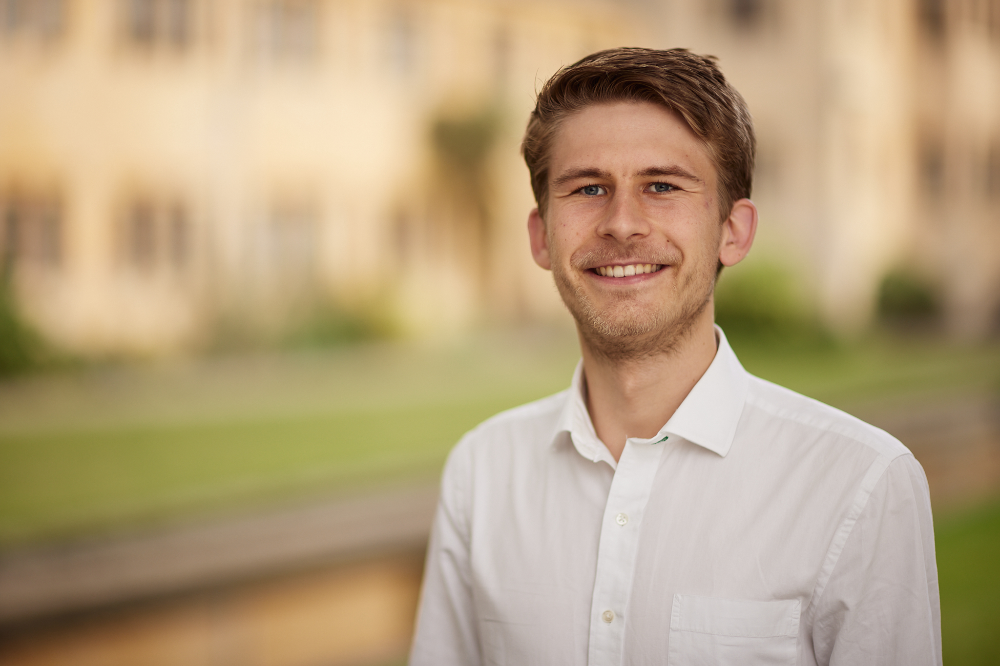

I am a Postdoctoral Prize Research Fellow in Sociology at Nuffield College at the University of Oxford. I am also an Associate member of the Department of Sociology. In my research, I study social integration in diversifying European societies. I focus on three different settings where individuals may experience diversity through interacting with others from their own or other backgrounds: civic organizations (e.g., sports clubs, cultural associations), neighborhoods, and coresidential partnerships (i.e., romantic unions).
My research examines how social boundaries emerge and persist in diverse societies. I study how individual preferences, (unequal) opportunity structures, and institutions shape patterns social sorting. I focus civic organizations (e.g., sports clubs, cultural associations), neighborhoods, and partnership markets as sites where these sorting processes take place. I am furthermore interested in their implications for social inequality and cohesion. I employ quantitative methods (mostly regression-based approaches) on large-scale population registers, longitudinal surveys, survey experiments, and comparative census data.
My research has been published in outlets such as Demography, European Sociological Review, Journal of Marriage and Family, PNAS Nexus, Social Networks, among others. My dissertation received the biennial Best Dissertation Award of the German Academy of Sociology and was ranked second for the Best Thesis Award of the European Consortium for Sociological Research.
Prior to my current position, I was a PhD student at Nuffield College and obtained my B.Sc. and M.Sc. at the University of Cologne. I have also visited the Netherlands Interdisciplinary Demographic Institute, Utrecht University, the VUB Brussels, and the WZB Berlin Social Science Center for research stays and spent a semester at the University of Groningen.
You can find an overview of my published articles under the 'Publications' rider of this website as well on my Google Scholar Profile.
Please do not hesitate to contact me! (kasimir.dederichs("at")nuffield.ox.ac.uk)